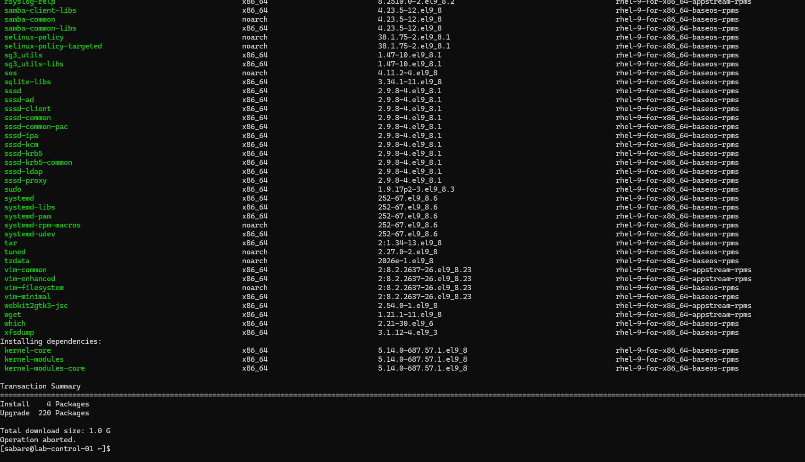
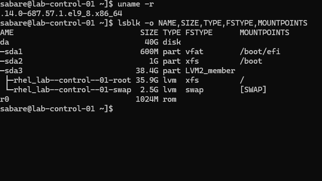
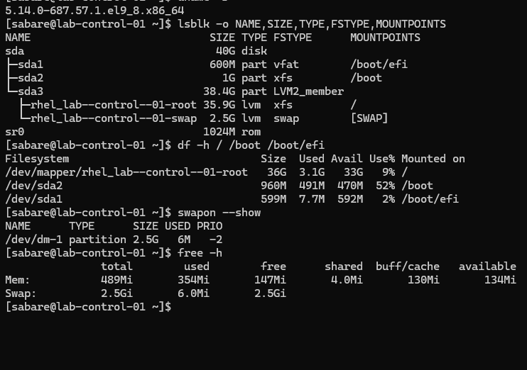
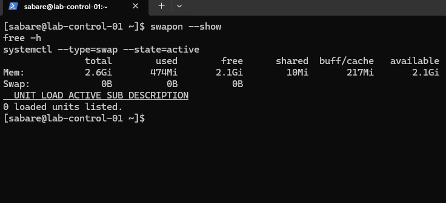
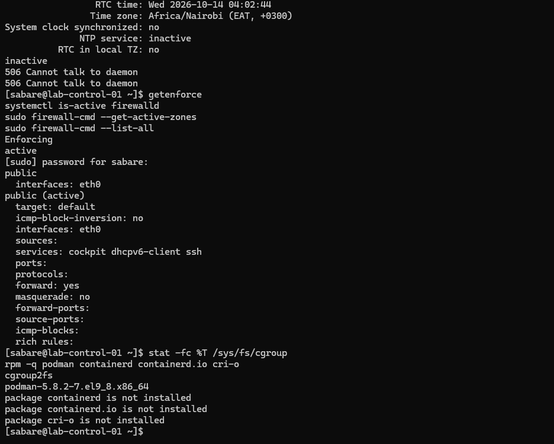
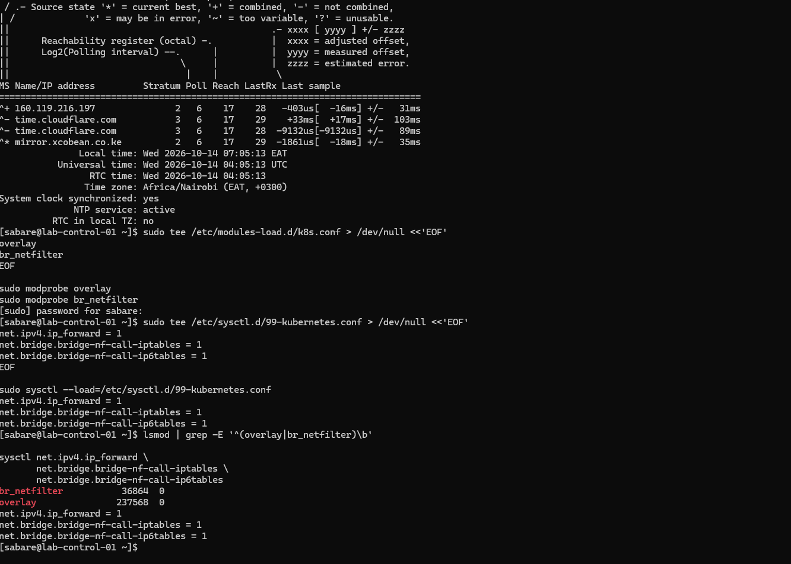
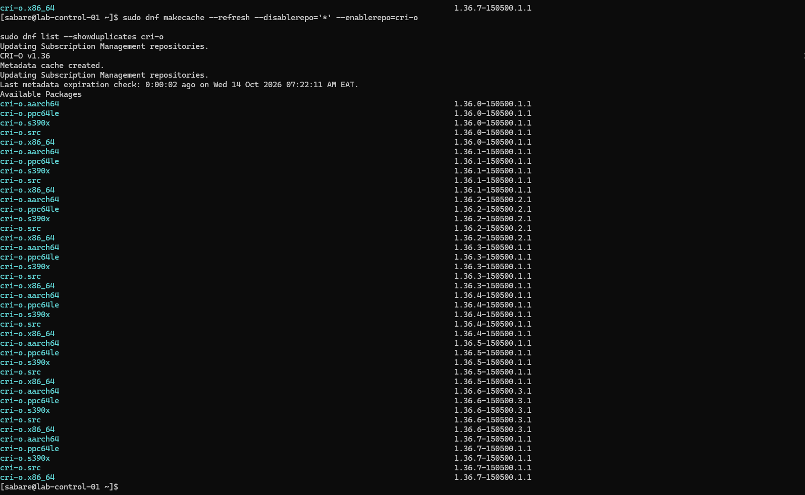
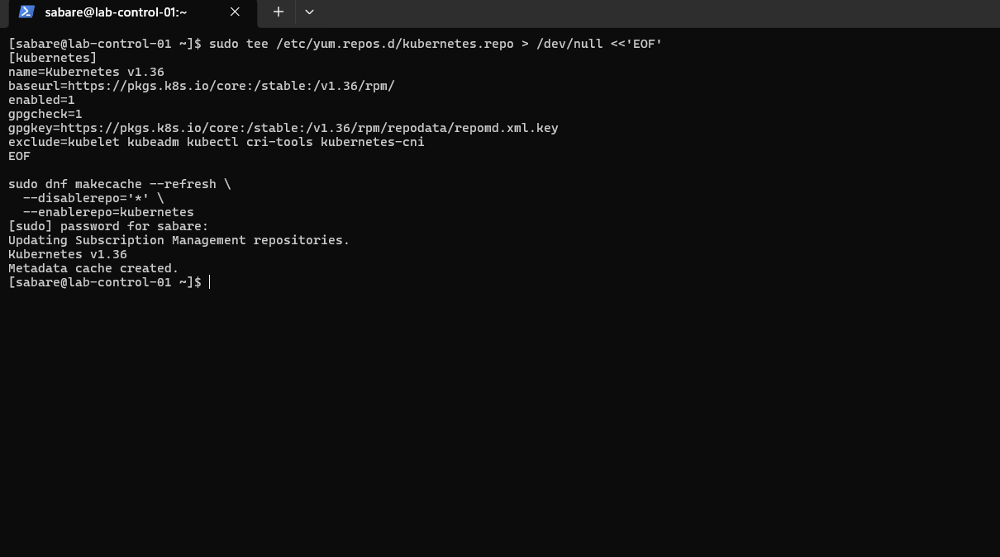
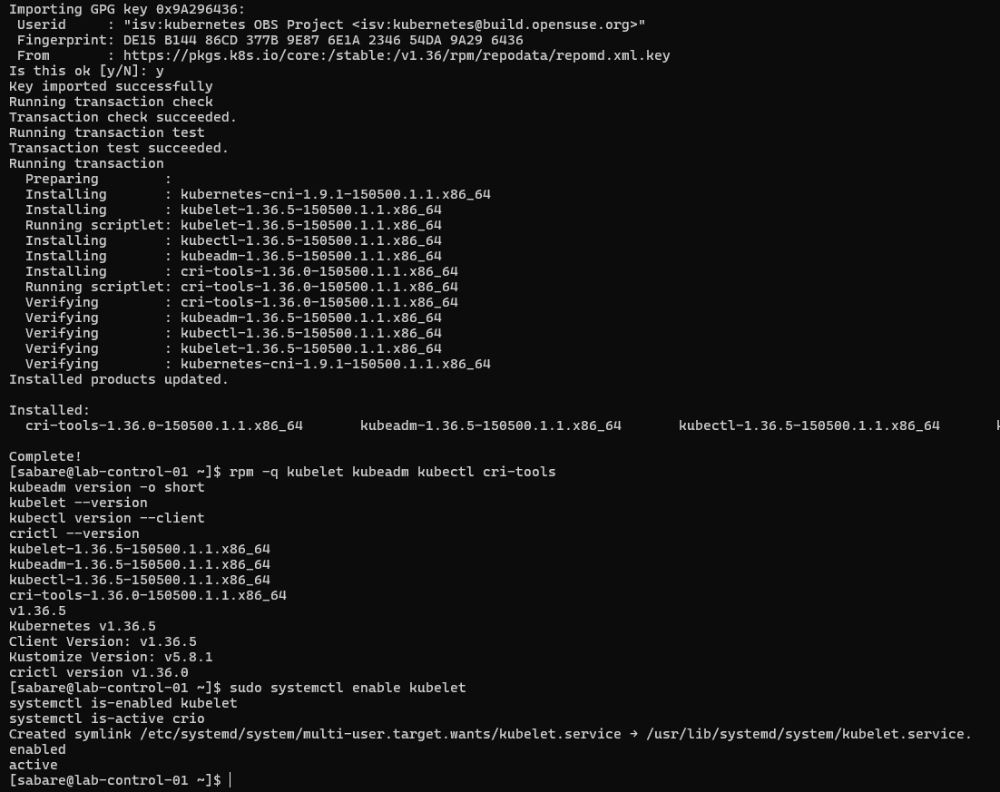

Preparing the first RHEL Kubernetes node¶
Recorded 2026-10-14 (Africa/Nairobi). These commands document the guided build;
do not rerun configuration writes blindly. Unless labelled Windows, commands
run in the RHEL SSH session as sabare, with sudo where required.
Current outcome¶
This chapter records preparation through package installation. Subsequent runtime checks, successful cluster initialisation and operator readiness are documented in control-plane and Calico preparation.
1. Update RHEL and inspect storage¶
sudo dnf makecache --refresh
sudo dnf upgrade --refresh --assumeno
sudo dnf upgrade --refresh
sudo reboot
Metadata retrieval succeeded. The preview proposed four installations and 220
upgrades, approximately 1 GB to download. --assumeno intentionally ends with
Operation aborted; it is a preview, not a failed installation.
The actual upgrade subsequently reported Complete! in shared terminal output.

Reconnect from Windows using ssh sabare@192.168.200.10, then inspect:
uname -r
lsblk -o NAME,SIZE,TYPE,FSTYPE,MOUNTPOINTS
df -h / /boot /boot/efi
swapon --show
free -h
The running kernel became 5.14.0-687.57.1.el9_8.x86_64. The 40 GiB disk has
an EFI partition, an XFS boot partition and LVM logical volumes for root and
swap. Root had approximately 33 GiB available. LVM separates logical storage
allocation from physical partitions; XFS is the filesystem used for root.

2. Correct the VM memory allocation¶
The guest initially reported only 489 MiB RAM. Hyper-V inspection showed Dynamic Memory enabled, a 512 MiB minimum and 3072 MiB startup allocation. Samples were taken at different times; their memory numbers need not match exactly.

Shut down gracefully from RHEL:
sudo shutdown -h now
In Windows PowerShell, confirm the VM is Off before changing memory:
Get-VM -Name "lab-control-01" | Select-Object Name, State
Set-VMMemory -VMName "lab-control-01" -DynamicMemoryEnabled $false -StartupBytes 3GB
Get-VMMemory -VMName "lab-control-01" | Select-Object DynamicMemoryEnabled, @{Name='StartupMiB';Expression={$_.Startup / 1MB}}
Start-VM -Name "lab-control-01"
The user confirmed False and 3072. After boot, RHEL showed about 2.6 GiB usable RAM. Fixed allocation provides a predictable baseline for this node.
3. Disable swap persistently¶
This lab uses a no-swap Kubernetes baseline. Kubernetes can support explicitly configured swap use, but that is outside this initial setup. Disabling swap does not create more RAM: workloads still need appropriate memory limits.
sudo swapoff -a
swapon --show
cat /etc/fstab
sudo cp -a /etc/fstab "/etc/fstab.before-disable-swap.$(date +%Y%m%d-%H%M%S)"
sudo sed -i '\|^/dev/mapper/rhel_lab--control--01-swap[[:space:]]|s|^|# Disabled for Kubernetes: |' /etc/fstab
sudo findmnt --verify --verbose
sudo systemctl daemon-reload
sudo reboot
The edit targets the exact swap line observed on this VM. The backup preserves
the original mount configuration. findmnt validates it; daemon-reload refreshes
systemd's generated units. The swap logical volume was not deleted.
After reconnecting:
swapon --show
free -h
systemctl --type=swap --state=active
Verified after reboot: no active swap devices, Swap 0B, zero active swap units.

4. Inspect security, cgroups and time¶
timedatectl
systemctl is-active chronyd
chronyc tracking
chronyc sources -v
getenforce
systemctl is-active firewalld
sudo firewall-cmd --get-active-zones
sudo firewall-cmd --list-all
stat -fc %T /sys/fs/cgroup
rpm -q podman containerd containerd.io cri-o
Initial results: chronyd inactive, SELinux Enforcing, firewalld active on eth0
in the public zone, and cgroup2fs. Podman was installed; CRI-O was not yet installed.
The chronyc error 506 Cannot talk to daemon occurred because chronyd was stopped.

Enable time synchronisation and inspect it after allowing time to contact servers:
sudo systemctl enable --now chronyd
systemctl is-enabled chronyd
systemctl is-active chronyd
chronyc tracking
chronyc sources -v
timedatectl
Verified: enabled, active, Leap status Normal, a selected ^* time source and
System clock synchronized: yes. Correct time helps certificate validation and
correlating logs across nodes. SELinux and firewalld were not disabled at this stage. Firewalld was later disabled during Calico preparation.
5. Prepare kernel modules and packet forwarding¶
sudo tee /etc/modules-load.d/k8s.conf > /dev/null <<'EOF'
overlay
br_netfilter
EOF
sudo modprobe overlay
sudo modprobe br_netfilter
sudo tee /etc/sysctl.d/99-kubernetes.conf > /dev/null <<'EOF'
net.ipv4.ip_forward = 1
net.bridge.bridge-nf-call-iptables = 1
net.bridge.bridge-nf-call-ip6tables = 1
EOF
sudo sysctl --load=/etc/sysctl.d/99-kubernetes.conf
lsmod | grep -E '^(overlay|br_netfilter)\b'
sysctl net.ipv4.ip_forward net.bridge.bridge-nf-call-iptables net.bridge.bridge-nf-call-ip6tables
Overlay supports layered container filesystems. Bridge netfilter allows filtering of bridged traffic; requirements depend on the eventual network plugin. IPv4 forwarding permits routing between interfaces. The files persist the settings; modprobe and sysctl apply them immediately. Both modules and three values of 1 were observed. Persistence after a further reboot has not yet been demonstrated.

6. Install CRI-O¶
Podman builds and tests images directly. CRI-O serves Kubernetes' Container Runtime Interface (CRI), managing containers requested by the kubelet. They have different roles and can coexist. This lab selected the 1.36 CRI-O and Kubernetes series.
sudo tee /etc/yum.repos.d/cri-o.repo > /dev/null <<'EOF'
[cri-o]
name=CRI-O v1.36
baseurl=https://download.opensuse.org/repositories/isv:/cri-o:/stable:/v1.36/rpm/
enabled=1
gpgcheck=1
gpgkey=https://download.opensuse.org/repositories/isv:/cri-o:/stable:/v1.36/rpm/repodata/repomd.xml.key
EOF
sudo dnf makecache --refresh --disablerepo='*' --enablerepo=cri-o
sudo dnf list --showduplicates cri-o
sudo dnf install cri-o container-selinux --assumeno
sudo dnf install cri-o container-selinux
rpm -q cri-o container-selinux podman
crio --version
sudo systemctl enable --now crio
systemctl is-enabled crio
systemctl is-active crio

The preview selected cri-o 1.36.7-150500.1.1, with container-selinux already
installed and no removals. Initially only the preview was run, so crio: command
not found and missing service errors followed. Running the actual installation
resolved this. The user reported CRI-O installed, enabled and active; the later
Kubernetes screenshot independently shows its active service state. A captured
post-install crio --version result is still absent.
Red Hat subscription warning¶
DNF displayed a registered-but-not-receiving-updates warning. It was investigated separately from CRI-O's community repository:
sudo subscription-manager identity
sudo subscription-manager status
sudo subscription-manager refresh
sudo subscription-manager repos --list-enabled
sudo dnf makecache --refresh --disablerepo='*' --enablerepo=rhel-9-for-x86_64-baseos-rpms --enablerepo=rhel-9-for-x86_64-appstream-rpms
sudo dnf check-update --disablerepo='*' --enablerepo=rhel-9-for-x86_64-baseos-rpms --enablerepo=rhel-9-for-x86_64-appstream-rpms
printf 'DNF exit code: %s\n' "$?"
The user reported successful metadata refresh and update checking. That confirms repository access at the time of testing, not that the warning disappeared. Under Simple Content Access, Disabled status alone is not proof of lost access; the actual status output was not supplied. No subscription UUIDs are published. DNF check-update returns 0 for no updates, 100 for updates available, 1 for error.
7. Install Kubernetes packages¶
sudo tee /etc/yum.repos.d/kubernetes.repo > /dev/null <<'EOF'
[kubernetes]
name=Kubernetes v1.36
baseurl=https://pkgs.k8s.io/core:/stable:/v1.36/rpm/
enabled=1
gpgcheck=1
gpgkey=https://pkgs.k8s.io/core:/stable:/v1.36/rpm/repodata/repomd.xml.key
exclude=kubelet kubeadm kubectl cri-tools kubernetes-cni
EOF
sudo dnf makecache --refresh --disablerepo='*' --enablerepo=kubernetes
sudo dnf install kubelet kubeadm kubectl cri-tools --disableexcludes=kubernetes

The exclusion prevents ordinary DNF updates from unexpectedly upgrading these packages. The explicit override permits this planned installation. Package signature verification stays enabled. This command selects the available patch from the 1.36 stream; it is not an exact historical patch pin for future rebuilds.
rpm -q kubelet kubeadm kubectl cri-tools
kubeadm version -o short
kubelet --version
kubectl version --client
crictl --version
sudo systemctl enable kubelet
systemctl is-enabled kubelet
systemctl is-active crio
| Component | Observed version/state | Purpose |
|---|---|---|
| kubeadm | 1.36.5 | Bootstraps and joins nodes |
| kubelet | 1.36.5; enabled | Node agent |
| kubectl | 1.36.5 | Kubernetes API client |
| cri-tools | 1.36.0 | Runtime diagnostics via crictl |
| kubernetes-cni | 1.9.1 | Network-plugin binaries; not a deployed cluster network |
| CRI-O service | active | Node container runtime |

Enabling kubelet schedules startup at boot; this is not evidence of a running control plane. Subsequent kubeadm initialisation is recorded in the next guide; worker joins remain pending.
Runtime communication (subsequently verified)¶
These checks were subsequently completed; see the evidence:
sudo tee /etc/crictl.yaml > /dev/null <<'EOF'
runtime-endpoint: unix:///var/run/crio/crio.sock
image-endpoint: unix:///var/run/crio/crio.sock
timeout: 10
debug: false
EOF
sudo crictl version
sudo crictl info
sudo crictl ps -a
This configures the diagnostic client, not kubelet. Expected evidence is CRI-O responding with CRI API v1 and RuntimeReady true. NetworkReady may be false before CNI configuration. An empty container list is normal before bootstrap. Firewall rules, Pod/Service address ranges, CNI selection, runtime/cgroup checks and SELinux compatibility must be settled before cluster initialisation.